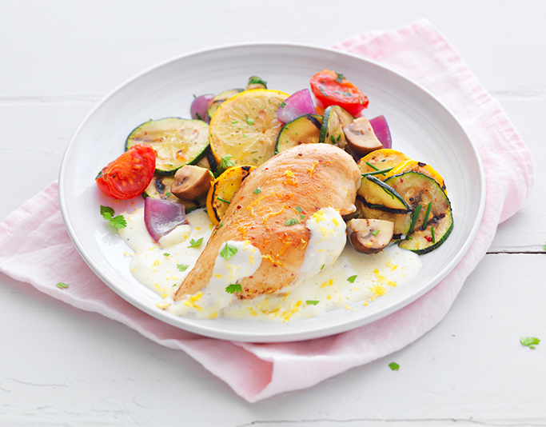
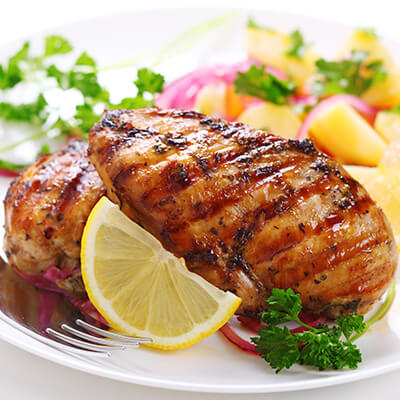
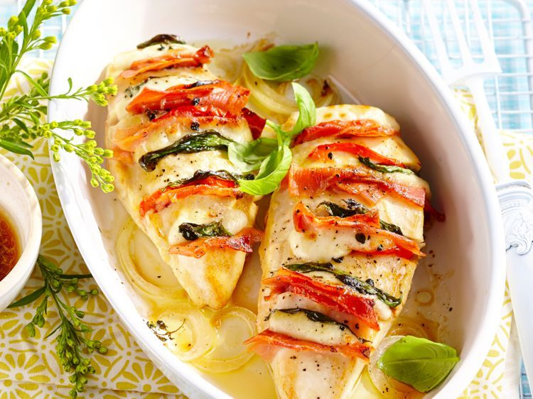
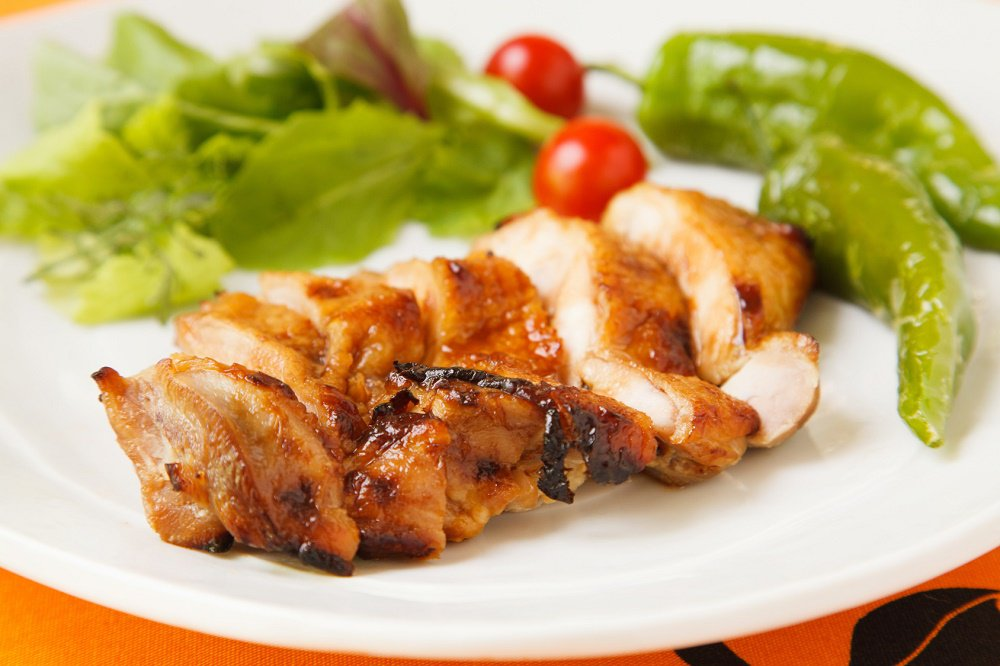
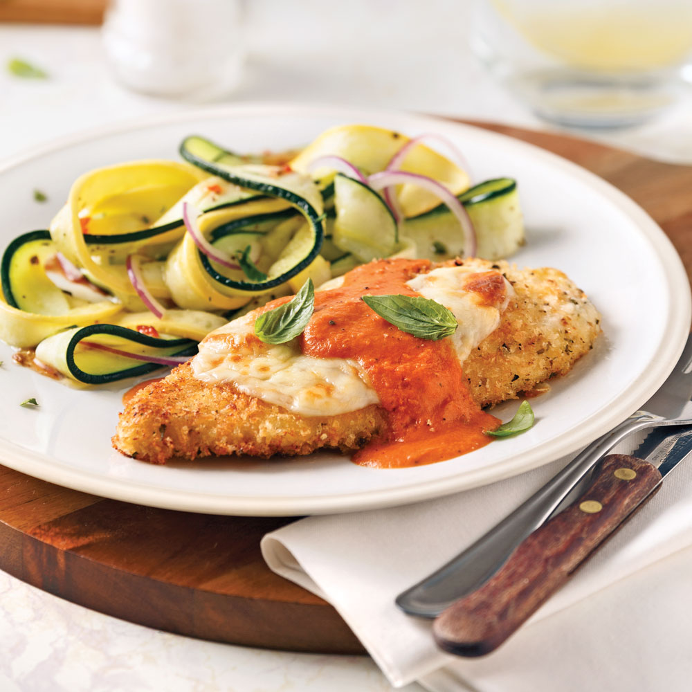
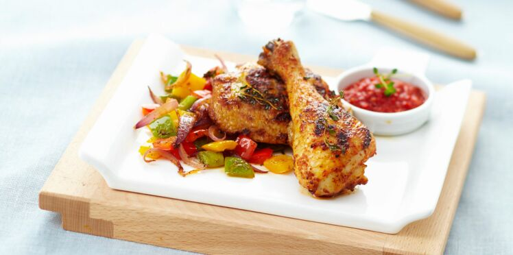
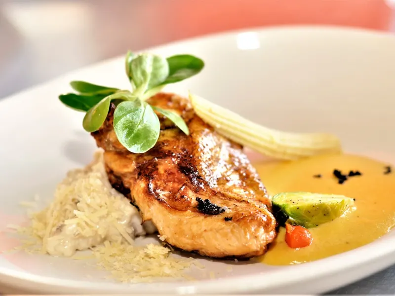
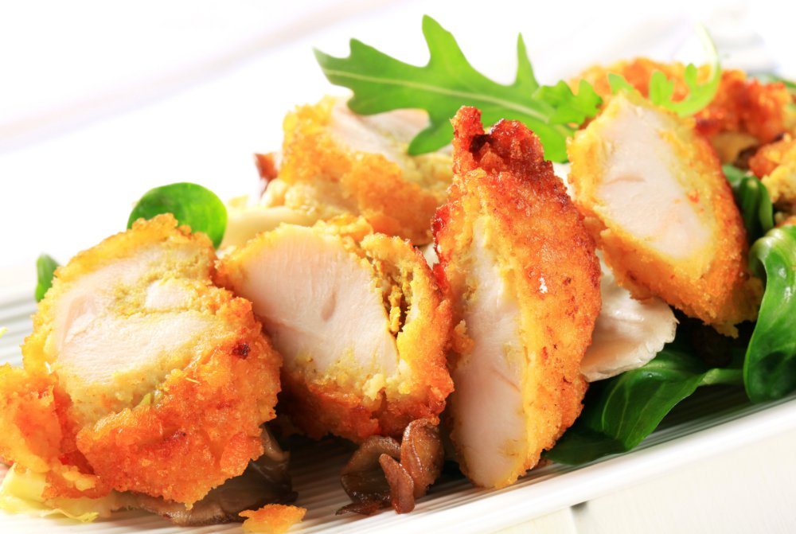
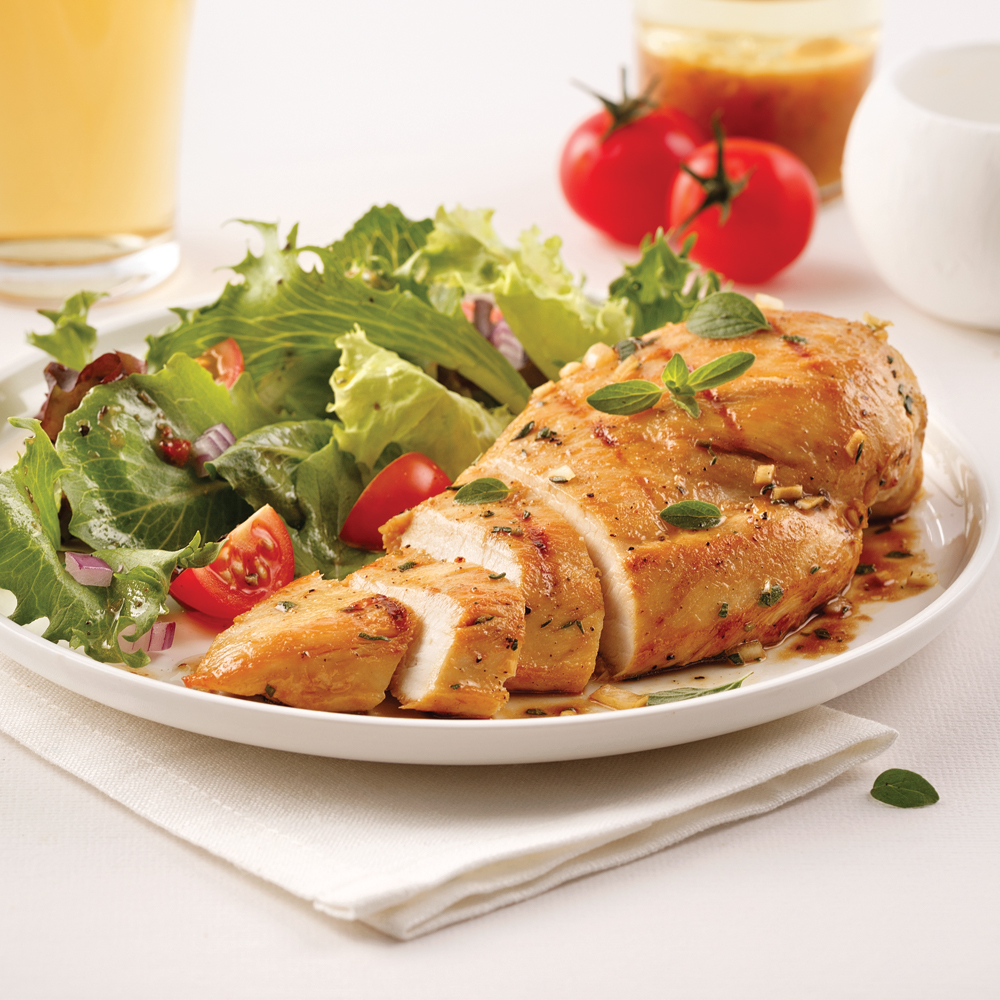
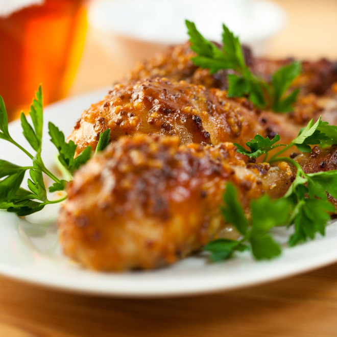

Chicken biryani
L'un des délices les plus royaux que vous puissiez déguster , le poulet Biryani est la quintessence d'un repas tout-en-un.personne ne peut résister à la vue de la recette aromatique et délicieuse du poulet Biryani.

Poitrines de poulet grillées à la moutarde
Filets de poulet cuits au four croustillants imbibés de saveurs d'ail et de citron. enrobé d'une chapelure de parmesan doré panko crée un croustillant addictif!

Cuisses de poulet
Ce plat constitue un dîner riche et savoureux, composé de cuisses de poulet avec seulement quelques ingredients : du miel, ail, miel, oignon et citron vert.

Filets de poulet caramélisés
Filets de poulet caramélisés aux agrumes et au gingembre.

Escalopes de poulet gratinées, sauce rosée
Cuisses de poulet au riz de chou-fleur, purée de butternut et tomates rôties.

Buffalo
Les Buffalo Wings sont une recette traditionnelle d'ailes de poulet frites, trempées dans une sauce chili beurrée et épicée et servies avec du céleri.

Filet de poulet
Succombez à nos délicieuses recettes de filet de poulet pané ou en sauce .

Escalope de poulet à la parmesane
Depuis 20 ans, BienManger.com recherche dans chaque région et dans chaque

Poulet au citron et à l’ail
0 vote0/5 Poitrines de poulet marinées à la bière et à l’érable

Nos valeurs
Depuis 20 ans, BienManger.com recherche dans chaque région et dans chaque
